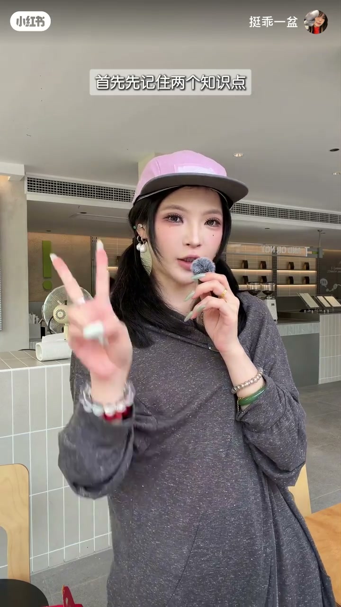
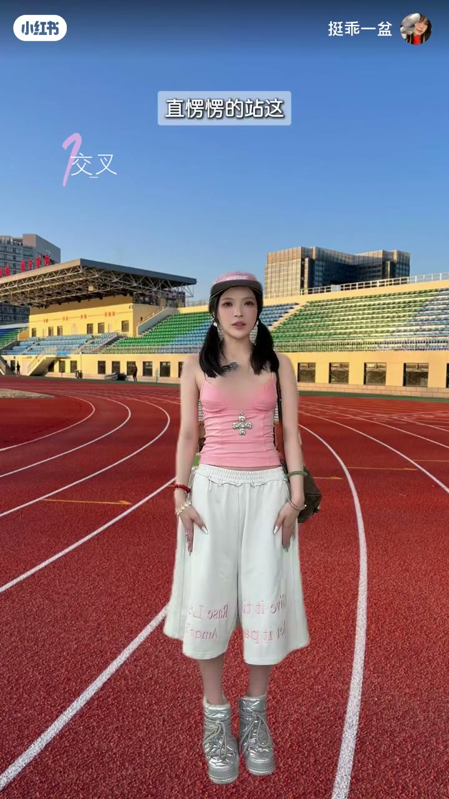
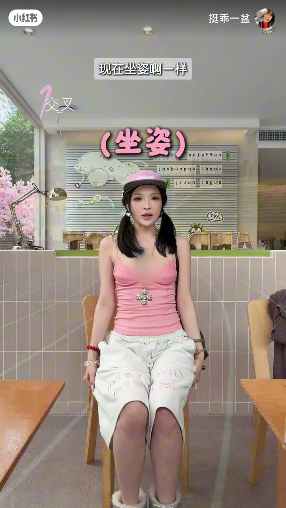
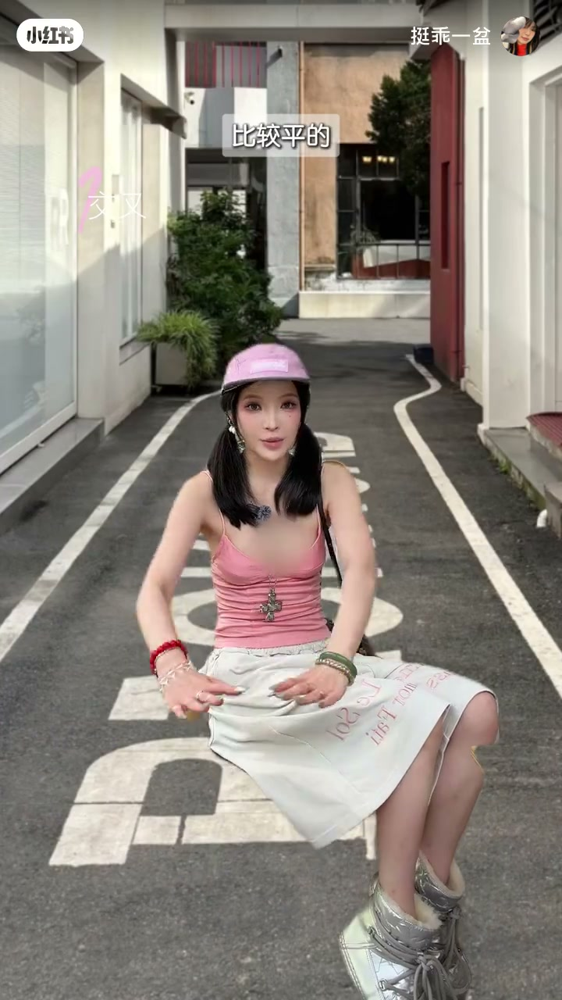
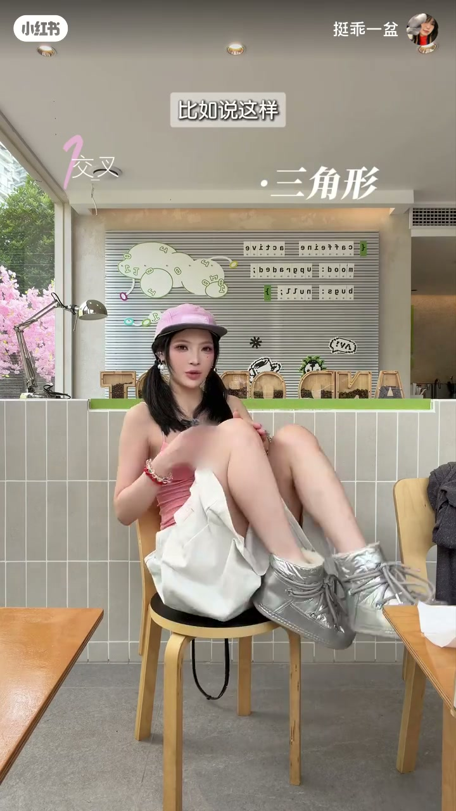
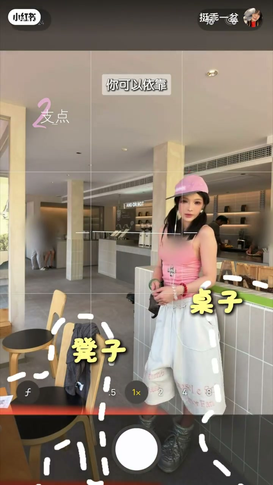
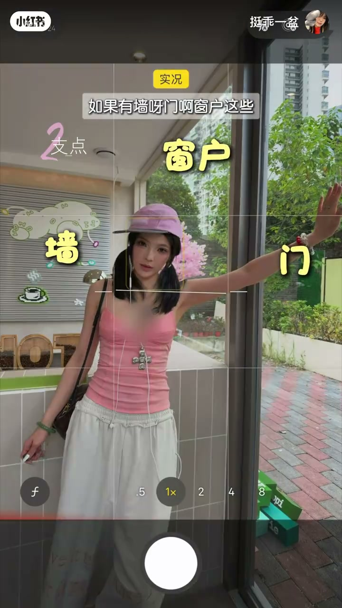
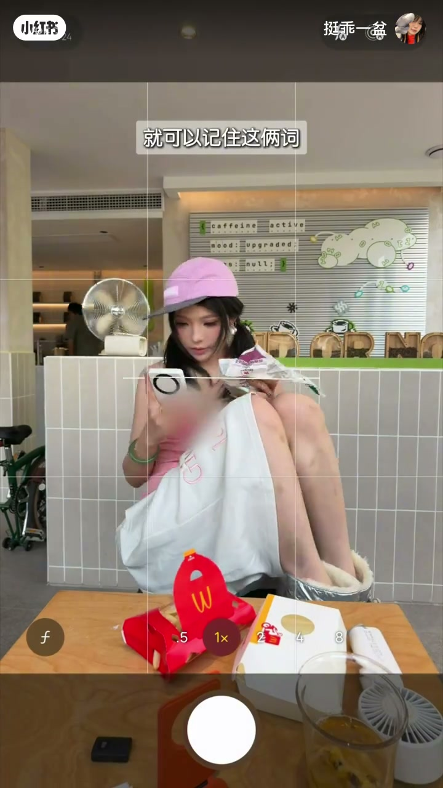

内容要点
一支 2 分钟的拍照姿势教学：先点破「不会摆姿势、拍照像站军姿」的痛点，然后只讲两个关键词——「交叉」与「支点」。交叉是把四肢和身体保持交叉（站姿腿交叉、坐姿交叉、插兜都是），支点是用身边的桌子、凳子、墙、门、窗户来倚靠；再加一个「三角形」规律——动作里都是三角形，把躯干当方块往上拼。记住这两个词，拍照时身体自然就有动作。
知识结构
不会摆姿势、拍照像站军姿；本期实景教学，记住「交叉」和「支点」两个词。
人正常站姿四肢与身体平行，摆姿势时尽量变成交叉——腿交叉、手交叉，让四肢和身体保持交叉。
坐姿一样用交叉，插兜也是一种交叉；肢体舒展开，姿势多来几套就能掌握规律节奏。
坐凳时四肢与头、躯干互动；所有动作里都有三角形——叉腰、搭头、交叉都是三角形，把躯干当方块拼三角形。
桌子、凳子、墙、门、窗户都可倚靠；交叉是身体的互动，倚靠是环境的互动。
每次拍照记住「交叉、支点」两个关键词，照这个方法多练几次就有效。
拍照不会摆姿势，记住两个词就够了：交叉（身体内部的互动）和支点（身体与环境的互动）。再补一个三角形规律，把躯干想象成方块往上拼三角形，姿势自然舒展不僵硬。
00:12-00:38知识点一：交叉
00:00很多人真的不会摆姿势，每次拍照跟站军姿一样。博主开场承诺：听完、看着拍，立马就能实操，视频看完「高低都会练会了」。实景教学的地点也接地气——菜市场。
00:10首先记住两个知识点：一是交叉，二是支点。什么是交叉？人正常站好，胳膊腿和身体是平行的；摆姿势的时候，尽量把一个「平行的人」变成「交叉的人」。先来个站军姿直愣愣地站着，然后交叉就是腿交叉、手也可以交叉——让四肢和身体保持交叉。


00:34腿部的交叉，这样、这样、这样都可以。
00:38-00:50坐姿交叉与插兜
00:38刚刚是站姿，现在坐姿一样可以用交叉，包括插兜也是一种交叉——这样、这样、这样都行。反正肢体只要舒展开，这样的姿势多来几套，你就掌握到规律和节奏了。

00:50-01:19三角形规律
00:50刚刚那一拍是坐在板凳上，现在以板凳为例——假如是坐在马路牙子那种比较平的，也是交叉：让四肢跟你的脑袋和躯干做个互动。
00:60到这有没有发现一个规律：你很多动作里都会有一个三角形。比如这样，就是一个三角形；插个腰，这是一个三角形；搭个头，这是一个三角形；这样一交叉，还是三角形。就是有很多三角形在你身上。把人的躯干想象成一个方块，你就拿各种三角形往身上这样、这样拼就可以了。


01:19-01:38知识点二：支点
00:79至于支点，就是你身边所处的环境：如果有桌子、凳子，你可以倚靠——比如单手靠桌子、双手靠桌子；如果身边有凳子，也可以靠着凳子；同理，有墙、门、窗户这些，都可以倚靠。主要就是和周围环境做一个互动——交叉是身体的互动，倚靠就是环境的互动。


01:38-01:51总结
00:98所以你每次拍照的时候，就可以记住这两个词——交叉、支点。脑子里有关键词了，身体上的行动可能就跟上来了。下次拍照照着这个方法多练几次，这个拍照方法很耐用。
